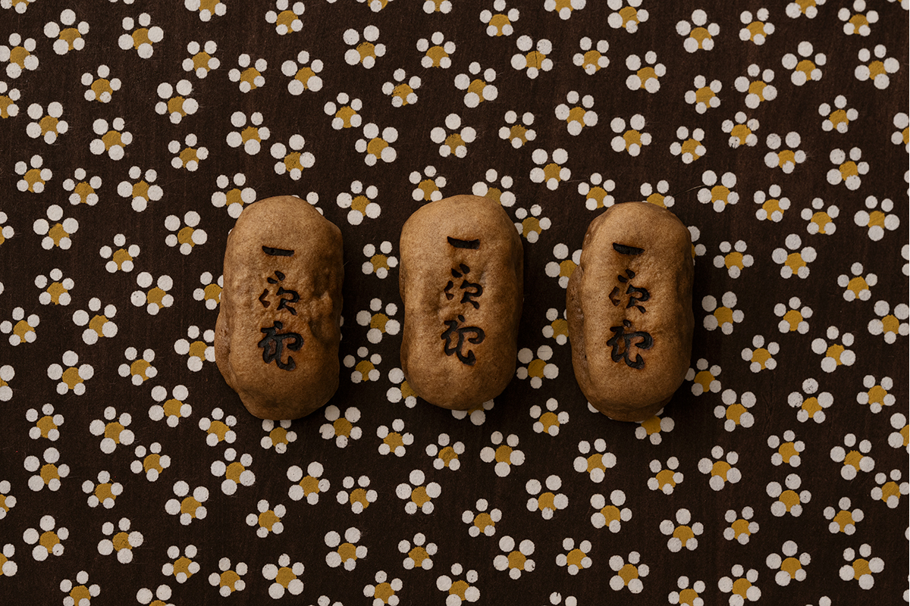
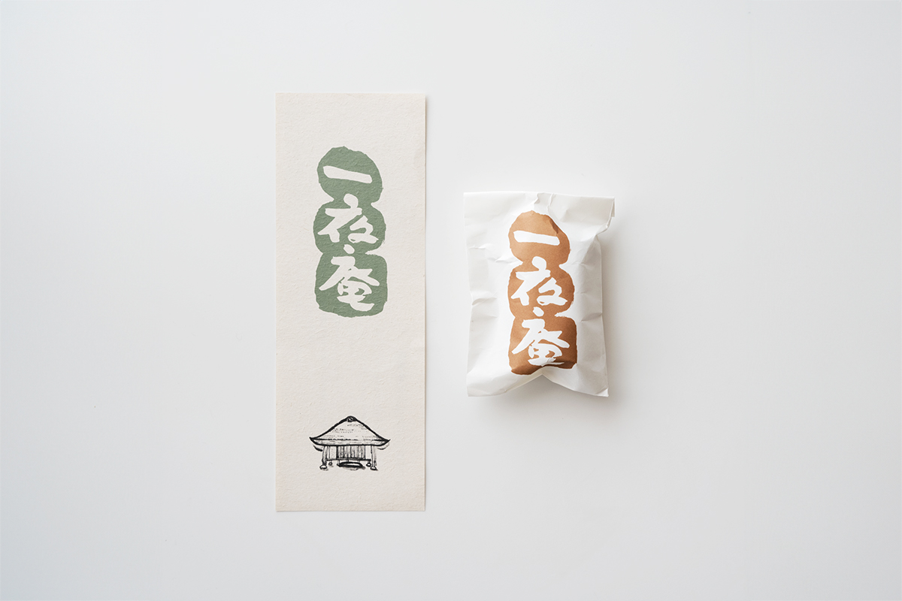
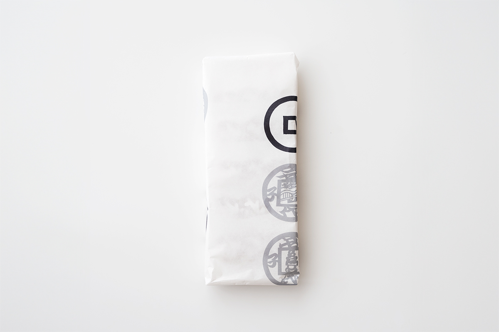

Префектура Кагава · Канъондзи · сладости
Мандзю «Ития-ан» от Хакуэйдо: сладость с гречишной мукой

Кондитерская Хакуэйдо ведёт историю с 1897 года и держит четыре магазина в Канъондзи. Её знаменитый мандзю «Ития-ан» прячет в себе гречишную муку и имя поэта XVI века.
Художник из Кагавы
Творец вне мингэй-движения
В Кагаве с эпохи Мэйдзи до эпохи Хэйсэй жил многогранный творец Кунибо Вада. Идеям мингэй (движения за красоту вещей повседневного ремесла) он сочувствовал, но в основанную философом и искусствоведом Соэцу Янаги (1889–1961) Ассоциацию народного искусства Японии не входил и шёл своим путём. Кунибо Вада стал первым директором музея народного искусства Сануки 1965 года и выстроил его в собственном стиле, верном природе Сануки. В родной префектуре он спроектировал множество сладостей.
Мандзю «Ития-ан»
Сладость имени хижины поэта
Хакуэйдо работает с Вадой с 1950-х годов, и «Ития-ан» одна из их совместных знаменитых сладостей. Имя отсылает к 1528 году: поэт и монах Сокан Ямадзаки (1465–1554), один из основоположников хайкай (народной ветви рэнга, предшественницы хайку), построил рядом с храмом хижину и назвал её «Ития-ан», «хижина одной ночи».

В начинке паста ан из красных бобов, а в тесте мука из отборной гречки, любимой еды монаха. Вкус простой и не приедается. Есть мандзю лучше всего, рассматривая выжженное клеймо с каллиграфией Вады.

Хакуэйдо
- Адрес
- префектура Кагава, Канъондзи, Канъондзи-тё, 1125-7
- Телефон
- +81 875-25-3888
- Часы работы
- 9:00–18:00
- Выходные
- четверг